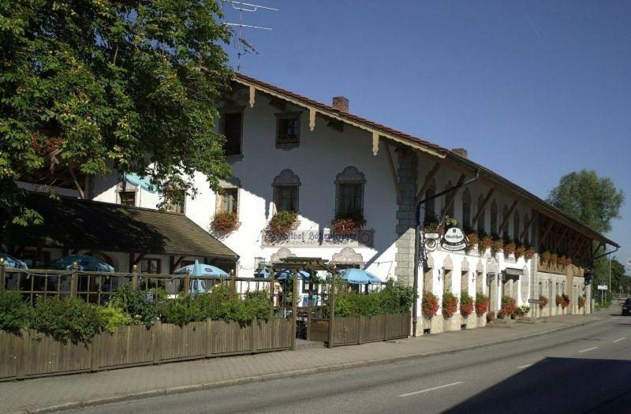
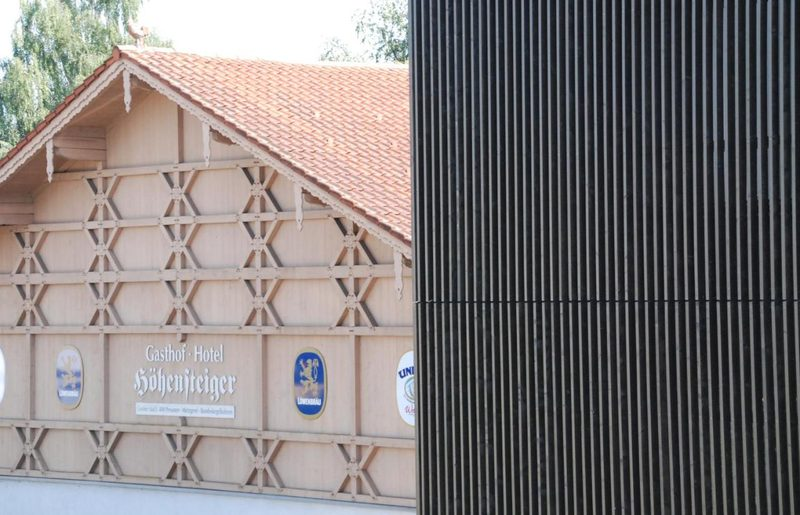
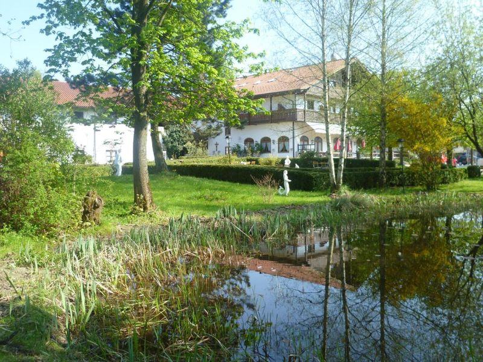
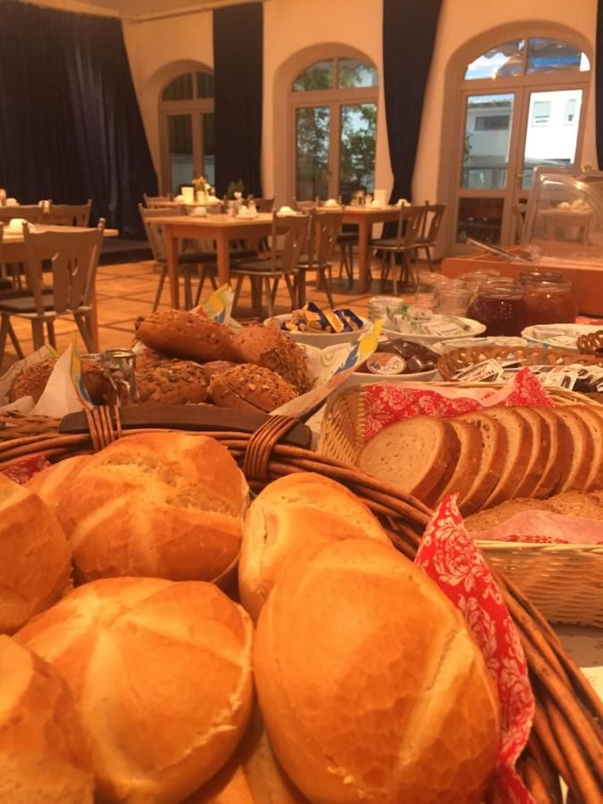
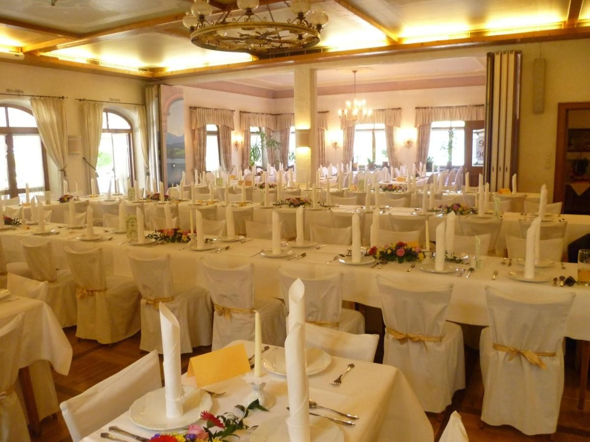
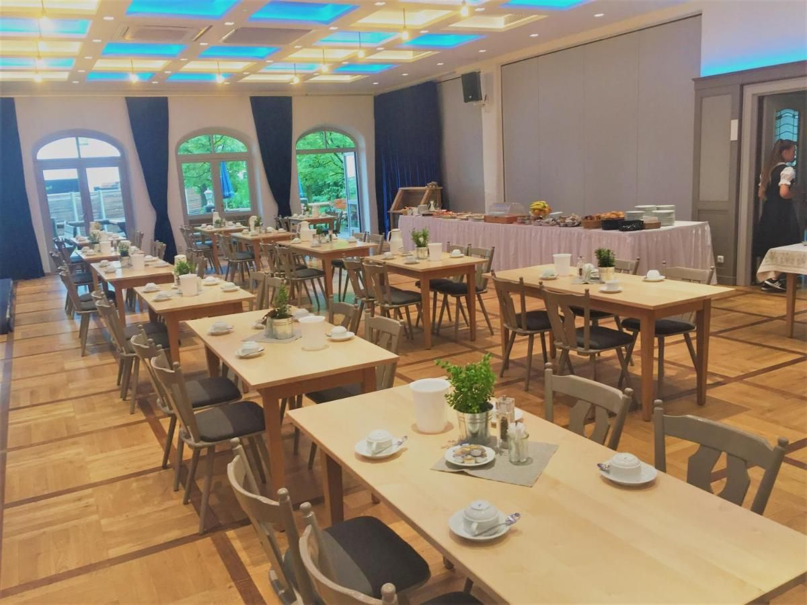
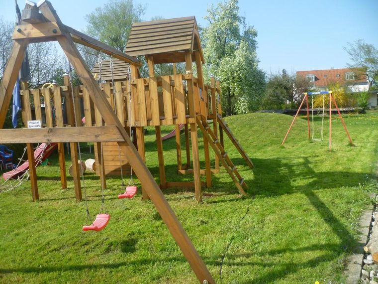

Kultur im Saal
Kabarett und Konzerte
Claudia Pichler mit «Kopfnuss und Konterbier» am 10. Dezember, das Weihnachtskonzert mit Nicki am 17. Dezember und Roland Hefter mit neuem Programm am 8. Januar.
Karten anfragenBeta-Vorschau — kein fertiges Design
Gasthof · Hotel · Rosenheim-Westerndorf
Wirtshausküche, Biergarten unter schattigen Kastanien und Zimmer im Gasthof wie im neuen Hoteltrakt – seit fünf Generationen führt Familie Höhensteiger das Haus am Nordrand von Rosenheim.
Wirtshaus · Biergarten · Festsaal · Hotel

8,1von 10 auf Booking.com4.020 Bewertungen
Stand: 24. November 2026


Willkommen
Der Gasthof in Westerndorf St. Peter wird heute von Familie Höhensteiger in der fünften Generation geführt. Aus dem Dorfwirtshaus mit Saal ist ein Gasthof mit Hotel geworden: Zu den traditionellen Stuben kam ein moderner Hoteltrakt aus Holz.
Geblieben ist, was ein bayerisches Wirtshaus ausmacht: ehrliche Küche, ein Biergarten unter Kastanien, Säle für Feste – und ein Park mit Spielplatz gleich hinterm Haus.
«The location was excellent, the breakfast was nice, and the staff were very helpful and welcoming»
Wirtshaus
In den Stuben gibt es bayerische Klassiker aus regionalen Zutaten – und dazu a bisserl Mediterranes und Amerikanisches: Pizza, Pasta und Burger. Im Sommer deckt der Biergarten unter den Kastanien im Park auf.



Aktuell
Kultur im Saal
Claudia Pichler mit «Kopfnuss und Konterbier» am 10. Dezember, das Weihnachtskonzert mit Nicki am 17. Dezember und Roland Hefter mit neuem Programm am 8. Januar.
Karten anfragen
Für Familien
Während Sie im Biergarten sitzen, toben die Kinder nebenan: Im Park warten Spielplatz und Trampolin.
Für Ihr Fest
Hochzeit, Taufe, Geburtstag oder Tagung: Unsere Räume fassen 10 bis 380 Personen – dazu Kellerbar und Kegelbahn.
Zimmer
Classic-Zimmer im Haupthaus, Comfort-Zimmer ab 30 m² im neuen Holztrakt und Familienzimmer mit drei oder vier Betten. Alle Zimmer haben Bad oder Dusche/WC und TV; WLAN ist im ganzen Haus kostenlos, das Frühstück vom Buffet inbegriffen.
Umgebung
Westerndorf St. Peter liegt am grünen Nordrand von Rosenheim – die Altstadt, der Inn und die Chiemgauer Berge sind schnell erreicht.
Rundherum
Drei Kilometer bis zur Rosenheimer Altstadt mit dem Max-Josefs-Platz, den Arkaden und dem Ausstellungszentrum Lokschuppen. Der Stadtbus hält direkt am Haus.
Inn- und Mangfallradweg führen durch Rosenheim – und abends wartet die Brotzeit im Biergarten. Radler und ihre Räder sind bei uns willkommen.
Simssee und Chiemsee liegen vor der Tür: baden, segeln oder mit dem Schiff zur Fraueninsel und nach Herrenchiemsee.
Kegelbahn und Eisbahn gehören zum Gasthof; für Vereine und Trainingslager haben wir Platz, Säle und Betten unter einem Dach.
Gästestimmen
8,1von 10 · 4.020 Bewertungen auf Booking.com
«Lovely hotel, quite traditional, lovely evening meal, great breakfast»
«Clean and spacious room, very friendly staffs, nice breakfast, and has a lot of parking spaces. Very good value for money.»
«Lovely people, very friendly, everything clean and tidy, a wonderful breakfast.»
Alle 4.020 Bewertungen auf Booking.com lesen Originalzitate, abgerufen am 24. November 2026
Anreise
Westerndorfer Straße 101 · 83024 Rosenheim · Westerndorf St. Peter
Auf der A8 München–Salzburg bis zur Ausfahrt Rosenheim, dann auf der B15 Richtung Rosenheim und weiter Richtung Landshut – das Haus liegt gut einen Kilometer nördlich der Stadt. Kostenlose Parkplätze am Haus.
Mit der Bahn bis Rosenheim Hauptbahnhof (rund drei Kilometer), weiter mit dem Stadtbus der Linie 5 Richtung Westerndorf – die Haltestelle liegt direkt am Gasthof.
+49 8031 86667 info@gasthofhoehensteiger.de Koordinaten: 47° 52′ 40″ N, 12° 06′ 44″ O
Die Karte wird von OpenStreetMap geladen. Dabei wird Ihre IP-Adresse an die Server der OpenStreetMap Foundation übertragen.
Mehr in der DatenschutzerklärungDirekt beim Haus anfragen
Ein Tisch in der Stube, ein Fest im Saal oder ein Bett für die Nacht: Fragen Sie direkt bei uns an – ohne Umweg über ein Portal.
Oder rufen Sie uns an: +49 8031 86667